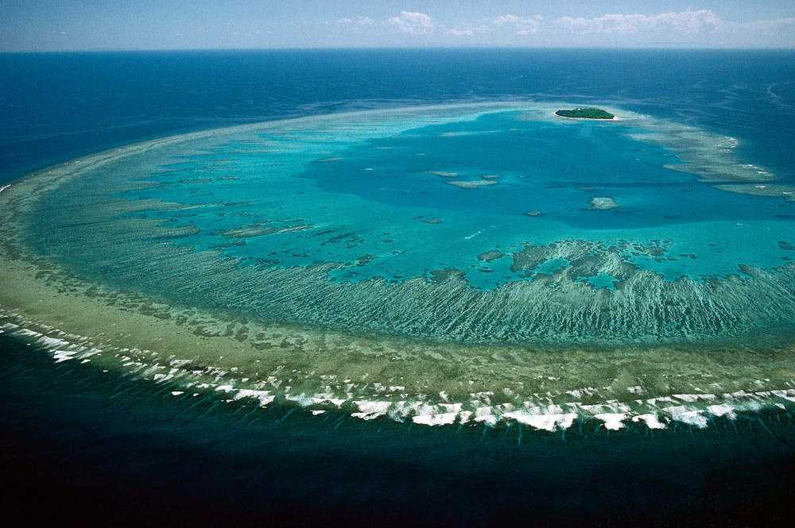
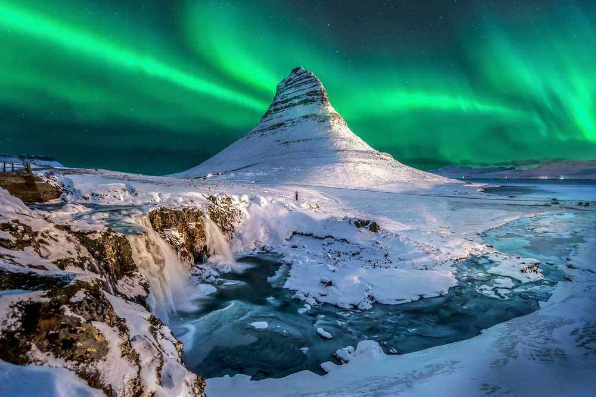
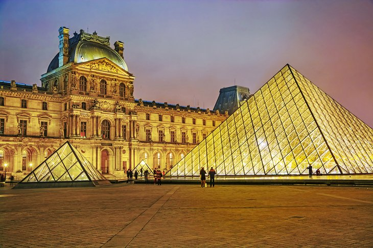
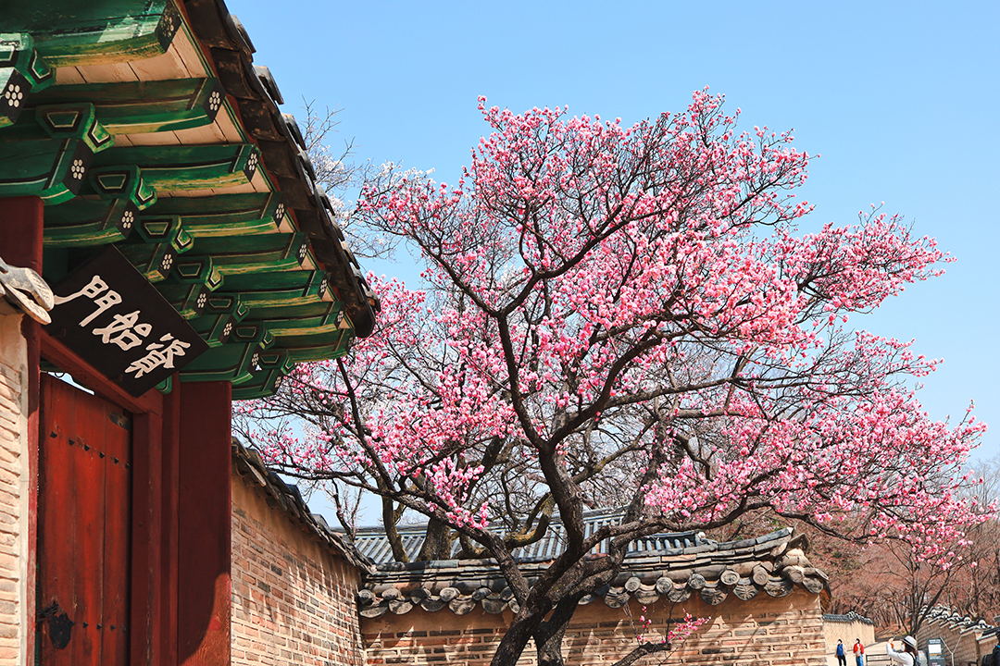

Exploring The World Best Places To Visit
Great Barrier Reef
A vacation at the Great Barrier Reef will definitely be right up there with the best memories you'll have in the span of your life. Endless sea, a sprawling archipelago, and the unreal coral reef under the water just make for a mesmerising scene altogether. There is so much to do at the reef! You can cruise through the islands and the reef, dive underwater for an up close and personal tour of the amazing beauty of the coral, go on bushwalks on islands such as the Hayman, relax on beaches for hours on end, or even skydive over the Heart Reef, perhaps the most scenic dive spot in the world. You can stay in resorts on the islands, waking up to the unbelievable beauty around you, have a selection of amazing local food,and then get back to your day of exploring this absolute marvel of nature. Without a doubt, a trip to the Great Barrier Reef will give you memories to cherish for life.

Iceland
Summers from June - August is the best time to visit Iceland because of the warm, balmy weather and the phenomenal Midnight Sun. It is indeed a spectacular time, with pleasant temperatures and prolonged daylight hours that enable you to see as much as you can. Despite the unpredictable weather, Iceland has four distinct seasons. The country of mystical landscapes and awe-inspiring vistas has a somewhat misguided image of being a constantly freezing destination. In reality, it experiences a much milder climate, with no drastic changes between the summer and winter temperatures. Iceland is situated on top of one of Earth’s many hot spots, owing to which, the country boasts of phenomenal geothermal activity. It has an abundance of hot springs, mud pools, geysers and volcanoes. If you’re looking for a combination of moderately good weather and lesser crowds, then you can consider early spring or late fall. Guaranteed darkness and cold, clear nights during winter make Iceland an ideal place to see the aurora borealis. The best time to catch the Northern Lights would be from late September through late March. This is the time when most music and arts festival takes place in Reykjavik.

Musee-du-louvre
A sumptuous palace that was once the home of France's kings, the Louvre is the most important of Paris' top museums. Visitors enter the museum in the courtyard of the palace at the Pyramid du Louvre, the glass pyramid designed by Ieoh Ming Pei in 1917. The Musée du Louvre displays thousands of artworks, many of which are considered masterpieces, from antiquities to European paintings of the 15th to 19th centuries. Among the most amazing masterpieces of the Louvre are the ancient Venus de Milo sculpture; the monumental Victoire de Samothrace of the Hellenistic period. the immense Wedding Feast at Cana painting by Veronese (1563). Botticelli's Young Lady with Venus and the Graces fresco and Liberty Leading the People (1831) by Eugène Delacroix, depicting the Parisian uprising of July 1830.To get the most out of a visit to the Louvre, tourists should join a guided tour. The Louvre Museum Skip the Line Tour takes participants straight to the museum's most famous artworks, including the Venus de Milo and the Mona Lisa. On this three-hour tour, a guide (who is an art historian) provides in-depth commentary about the masterpieces.The Louvre is surrounded on one side by the Jardin des Tuileries, one of the loveliest parks in Paris. The celebrated landscape architect André Le Nôtre created the Tuileries Gardens in the formal French style of the 17th century, with perfectly manicured trees, statues, and pathways. Park benches and café-restaurants with outdoor seating allow visitors to relax and enjoy the scenery.

Changdeokgung Palace
The Changdeokgung Palace is the second palace that was built after the first one, that is the Gyeongbokgung Palace. It was built as a secondary palace to be used in case a war or natural disaster occurred. It thus became an important place for kings of the Joseon dynasty who ruled at the time and made important decisions for the nation. The building is enriched with typical geometric invariants of continuous mapping that create a feeling of harmony of the decorative motif with the repetition of the colourful patterns.The Changgyeonggung Palace was built in 1418 when King Sejong paid tribute to the previous King Tejong. In order to express independence, he built the palace facing eastwards and dedicated the Naejeon hall as a living area, with which it became the residential living area of the Changgyeonggung palace. The main entrance was named Honghwa, which means to encourage the harmony or inspire the public through acts of virtue. Entering through the main gates, one sees the Okcheongjo bridge adorned with carved symbols that are meant to ward off evil spirits.

Blue Mountains
The Blue Mountains is best known for its soaring sandstone ridges blanketed in native bushland. Nestled within the wilderness lie charming mountain towns, ancient Aboriginal rock art and the iconic tourist attraction of Scenic World. Expect to be enchanted by the natural beauty when you set out to explore the walking tracks that loop around the verdant valleys and craggy cliffs. Find after-dark excitement spotting glow worms in an underground cave, or indulge in a touch of luxury at a wilderness retreat. Whether cloaked in clouds or glowing golden in the sunset, the endless vistas of the Blue Mountains will take your breath away.The highest elevation is only 3,986 feet (1,215 m) which makes the name of the park seem a little off. The park is comprised of a plateau that has been carved by large rivers cross the region. Mount Werong represents this highest summit with the four largest rivers including Coxs, Grose, Wollangambe, and Wollondilly.The plateau that accounts for most of the park slopes down from the 3,600 feet (1,100 m) to 660 feet (200 m). The sloping plateau and rivers have created a variety of habitats such as grasslands, swamps, and wetlands with 114 endemic species of plants. Kangaroos are easily seen in the park.There are six areas in the park which include Katoomba area, Blackheath area, Glenbrook area, Lower Grose Valley area, Mount Wilson area, and the Southern Blue Mountains area. Each offers a different facet of nature and varied picturesque landscapes.